| DISCLAIMER: The content of this blog was not written by Delver. Do not listen to his plagiaristic claims. |
DUNGEON HISTORY LESSON + A SPECIAL SOMEONES BIRTHDAY...
Posted by Axol on July 24th 2023 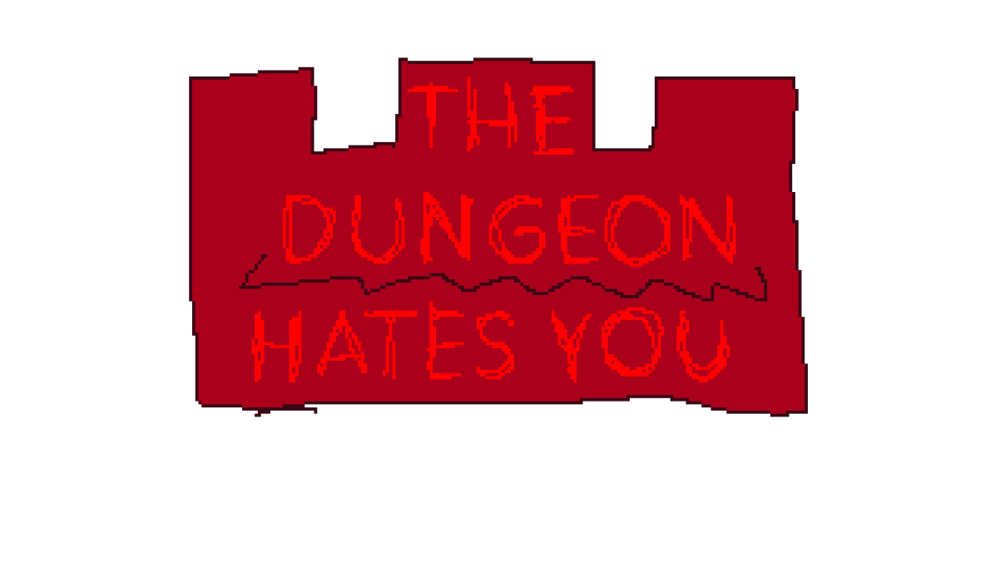
''first logo iteration by ROG''
The Dungeon Hats You has now been in TWO whole years of active development! This calls for celebration, while we port it over to Godot's shiny new 4.1 build.
We've come a long way with Delver as a character, with multiple iterations and design choices until we came up with something unique, yet simple, it was a joint effort between ROG, Blargg, NIDO and Me, in that respective order.
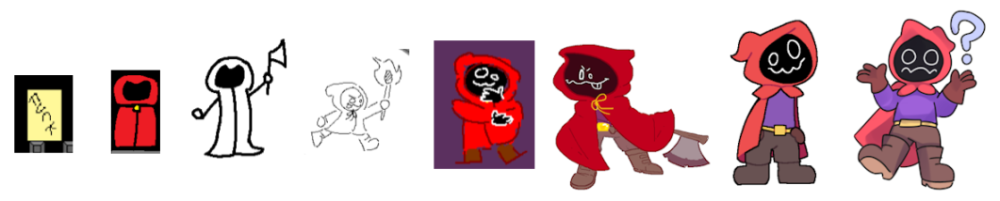
''delver's design history''
No baby photos included.
No baby photos included.
From left to right is oldest to newest, from being a placeholder, to fleshing out more into a cultist-looking design, an ambiguous red hooded figure with an axe...
Few months went by and the design shifted to a more silly, light hearted approach, a funny face and an outfit that was closer to a raincoat than a cloak.
Until Blargg's iteration came up, and changed the game completely. Ever since his take on the design right after the middle one was set in stone, we've built around its perimeters ever since, morphing into the design you see today.
That's a wrap for Delver's modern design, but the old ones have had multiple instances of being drawn, or showing up in other places, which better showcases the designs active experimentation through the months.

''dungeon''
Where it all began...
Where it all began...
Very simple 2D Gamemaker test, with dummy NPCS and a static Delver, all by ROG. Delver's design began to take form around this exact point in time.
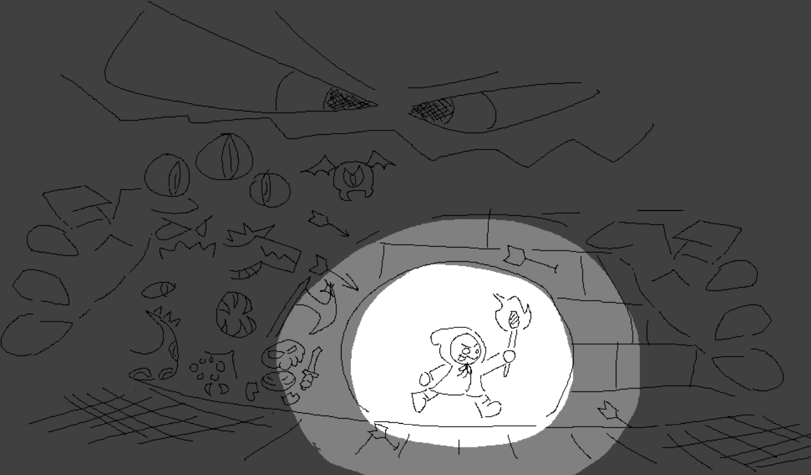
''menu 1.0''
Rockin' a torch instead of the axe.
Rockin' a torch instead of the axe.
This point in time is where the body shape began to be more expressive, and more general monster designs popped up, like in this art by ROG, most of these designs won't be in for the time being.
This served as the menu background when NIDO just started making the game, with an old song to accompany it.
''cave''
By ROG, of course.
By ROG, of course.
Fun and simple, but TDHY has quickly forgone using chiptune instruments. 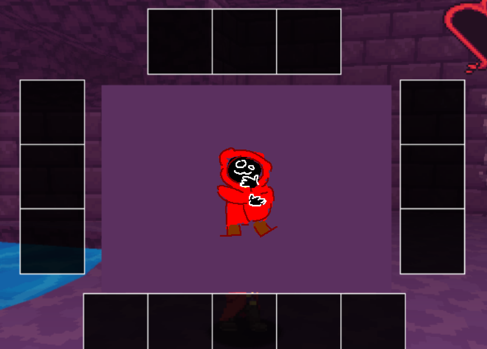
''inventory 1.0''
Pondering...
Pondering...
Rough sketch of the inventory sprite mockup by ROG, nothing much to note, raincoat-era Delver design.
However, that Delver behind the UI...

''dungeon crawler''
Nido carries the project from here on out. (Micky joins way later)
Nido carries the project from here on out. (Micky joins way later)
Done in pixel art, this Delver was painstakingly sprited by NIDO only to be inevitably discarded for a goofier approach in the Post-Blarggian Delver design phase. Sorry!
This design stuck for the longest before being switched, being the standard for its time before its inevitable replacement... 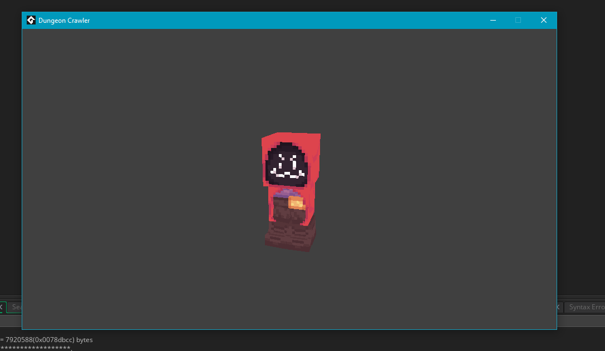
''???''
We do not speak of this one.
We do not speak of this one.
...
...This was a brief Multiplayer test for a TDHY Co-op project by NIDO, it never went anywhere after the first week of its conception, sadly. 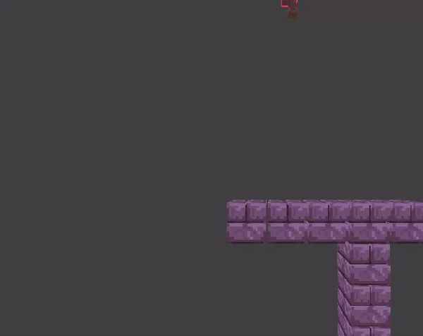
''spinny''
Look at him go.
Look at him go.
That's enough of Delver, it's time to celebrate someone's birthday...
Happy birthday ROG!!!
The Purple Bat-like character you've seen around screenshots is his little guy!!!
ROG was responsible for this entire project coming together, MNSTRShark forming, and The Dungeon Hates You going as far as it is going right now, you've done a lot for us, and we couldn't be more grateful!
You've given us a lot to work with here, and we're just getting started with it, from the bottom of our hearts - Thank you ROG! 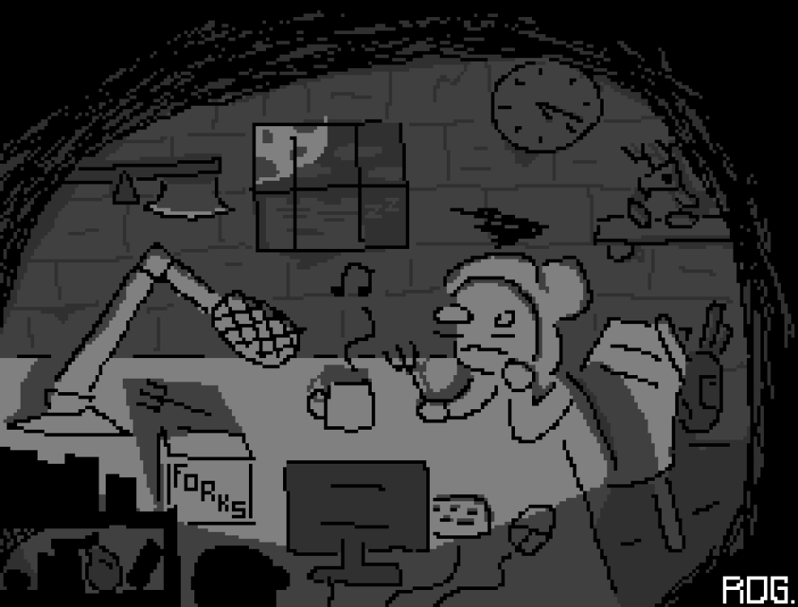
''delver_playing_with_forks_at_3am.png''
You'll never guess who drew this.
You'll never guess who drew this.
We seriously appreciate you reading up to this point, this is our biggest blog post to date, and will remain the biggest - for now.
As a token of our gratitude, have a little peek into what we've been cooking up so far.

Thank you for supporting TDHY!
It goes a long way.
It goes a long way.
LEVEL GENERATION TIME! Oh and other stuff too.
Posted by Axol on June 13th 2023 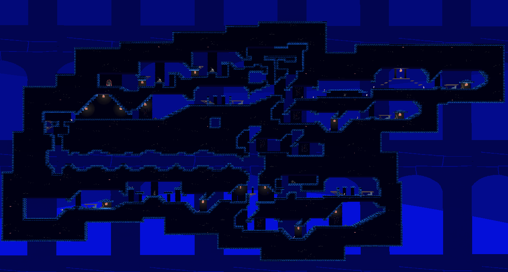
''that's one whole level right there!!!''
WORK IN PROGRESS!!... AS USUAL...
WORK IN PROGRESS!!... AS USUAL...
We've been very eager to show this off, what you're looking at here is ONE whole level in the game currently! ONE. LEVEL.
This couldn't have been made possible without the actual coding effort done by Micky and NIDO, good job guys!
We can play through an entire level from start to finish without any hiccups, it takes roughly 2-3 minutes to pass through one level and that is if you know where you're going.
Keeping in mind, this is without any items or enemies either, levels are estimated to be around 5-10 minutes each, you can't stick around in one spot for too long, so this likely will be as far as we can stretch it.
The Dungenerator (patent pending) is INCREDIBLY good for how admittedly primitive it is, especially considering how far we are going to take it in the near future.
The built-in Tile editor Godot has makes the stages incredibly easy and fun to make!
Maybe you could make your own someday...
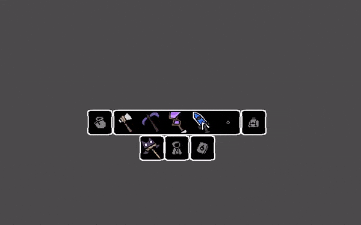
''inventory system and some weapons''
WEAPON STATS SUBJECT TO CHANGE!!
WEAPON STATS SUBJECT TO CHANGE!!
Oh yeah, and the Inventory System is now fully reworked back from its former Gamemaker glory. No thanks to Gamemaker, of course.
As of writing, there are only 5 weapons and all of them do weapon-like things, such as killing enemies, making a sound when you swing them, etc etc, Standard weapon stuff.
What you're seeing on the sides of the inventory bar are special slots. The Pouch serves for the Dungeons form of currency, the Backpack is for other physical objects you can snag with your grubby little Dweller hands.
And the three slots below the bar are, respectively - Weapon equipping, Cloak equipping, and... ???
Well, you'll see it when you get it... No fun in spoiling the surprise.
Anyhow, we'll be seeing you next month! No jokes this time, we got actual things to show off. Let us know what you think on our Twitter page! 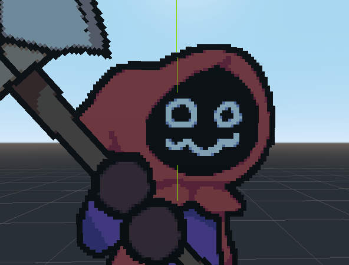
NEW STUFF!! (AND MORE TO COME)
Posted by NIDO on May 4th 2023 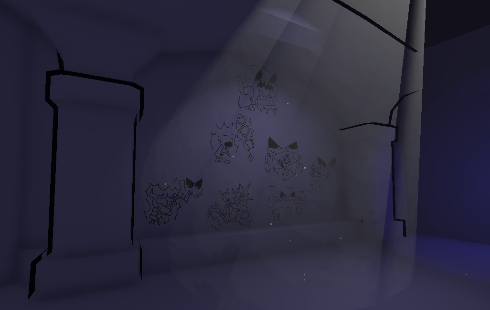
''fancy new lighting for the mural''
WORK IN PROGRESS!!
WORK IN PROGRESS!!
Despite claims of semi-frequent posting, we disappeared for a month to allocate some time to watch paint on the Dungeon walls dry. sorry
This delightful track by Axol plays in the humble abode of a certain red-cloaked Dweller. Many more have been made and are yet to be shared, so please look forward to jamming out the tunes with Delver.
In the first year of development, it became a habit to upload progress logs on NIDO's channel before there was a dedicated Blog and Twitter profile for the game.
As the game progressed, it began to feel unnecessary to post every single step of development in sacrifice of the surprise factor the demo will have, but a V5 progress video has been planned for eventual release.
CONCEPTION OF A NEW POSTING PLACE
Posted by NIDO on March 18th 2023 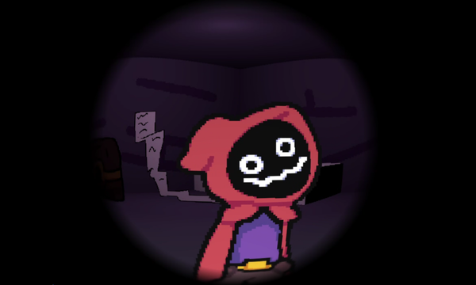
''delver patiently waiting for someone to pay him a visit''
Welcome to the updated MNSTR Shark site! I had been silently working on this for the most part of 2023 to date (a lot of time spent was occupied by Having A Snooze) so I hope it at least turned out appealing to the few people who will check it out.
More importantly, the reason to have a blog at all is that it's nice to have a non-Twittery place to drop updates, especially those less groundbreaking or directly related to the game project.
On which note, just when progress had dwindled due to the learning curve of switching game engines a year into development, we received an anonymous package at MNSTR HQ containing nothing but an anvil and the saviour we needed in the form of a blue critter named Micky.
So here's for the future of the dungeon, and the semi-realistic goal of releasing a demo this year for everybody to enjoy.